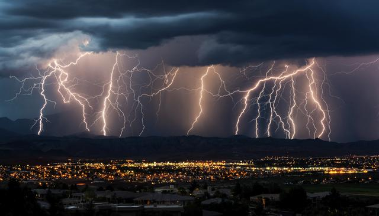
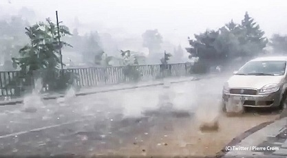

Aquí vemos una de las tormentas que pueden haber en todo el mundo debido a la diferencia de temperatura entre la cálida tierra y el aire frío en altura.
Cada vez hay tormentas más severas por el mundo debido al cambio climático, por lo que no es raro ver tormentas de este tipo donde antes apenas había.
| 1º tipo | 2º tipo | 3º tipo | 4º tipo |
|---|---|---|---|
| Tormenta eléctrica aislada | Tormenta con núcleo convectivo | Tormenta tropical | Huracanes |
| Común | Algo común | Normalmente en las zonas tropicales | En zonas tropicales y con vientos muy devastadores |